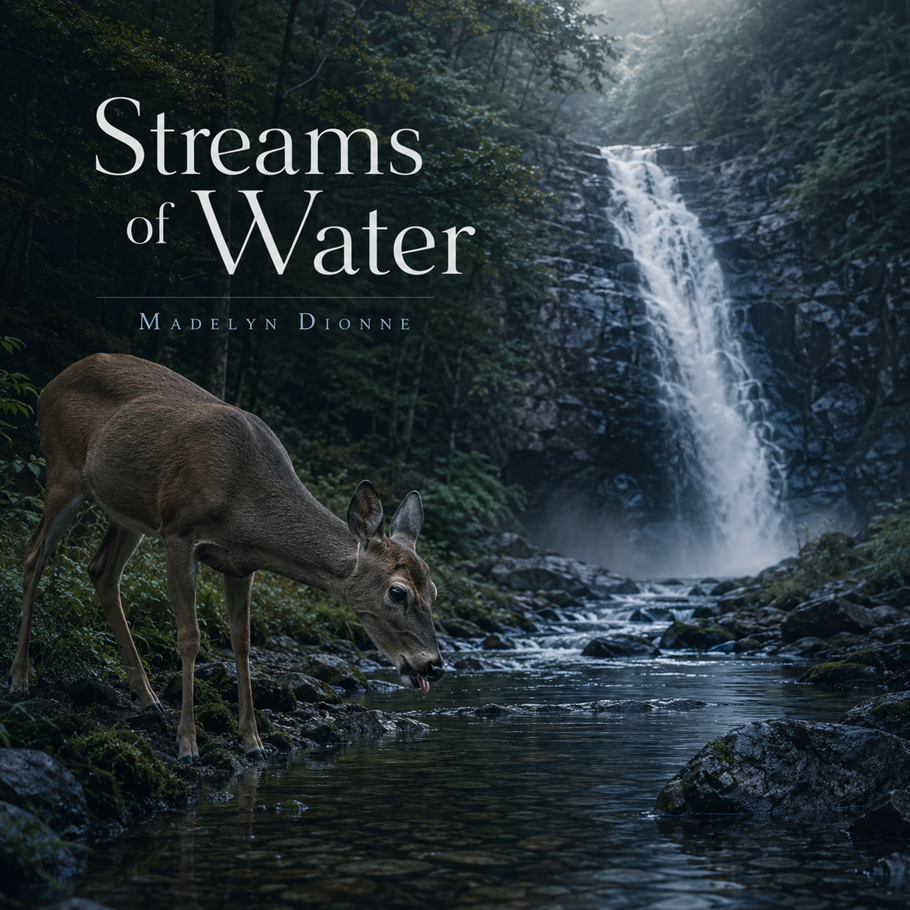

Streams Of Water

Want to download this song? Return to the Songs page, add this song to your playlist, then open My Playlist. Select the song and choose Download Song to review the Free Use agreement.
Lyrics
Opening
As the deer pants for streams of water,
So my soul pants for You, for You.
My soul thirsts for You, the living God.
When can I go and meet with You?
Verse 1
My Pain has been my only food
While people say all day long,
“Where is the One who is good?”
All these things I remember, from my soul:
How I used to go to the house of God
Protected by the One, I'm His, I'm whole
Chorus
As the deer pants for streams of water,
So my soul pants for You, for You.
My soul thirsts for You, the living God.
When can I go and meet with You?
Verse 2
Why, my soul, are you downcast?
Why so disturbed within me?
Your hope's in God, This life won't last.
My bones suffer agony, my feet unshod
My foes taunt me, all day long
Saying, “Where, O where is your God?”
Bridge
Deep calls to deep—
From the depths of me to You,
In the roar of Your waterfalls,
Your waves come crashing through.
Your foaming breakers sweep over me,
Yet even beneath their pounding flow,
Deep within my troubled soul,
You are My God, the One I know.
Chorus
As the deer pants for streams of Living Water,
So my soul pants for You, for You.
My soul thirsts for You, the living God.
When can I go and meet with You?
Outro
Soul, why be downcast?
Put your hope in God,
I will always praise Him,
My Savior... and my God.
Devotional
Hope in the Roar
Psalm 42 begins with longing: “As the hart panteth after the water brooks, so panteth my soul after thee, O God” and “My soul thirsteth for God, for the living God” (Psalm 42:1–2). This is not a person who has stopped seeking God. The psalmist longs for Him intensely while tears, painful memories, and the taunts of others fill his days. His thirst is evidence of relationship, even though he cannot presently enjoy the nearness he remembers.
The song, Streams Of Water, follows that movement from thirst through distress toward hope. But the psalm, not the song, tells us what that hope must face. It does not make the sorrow disappear before it calls the soul to trust God.
Remembering What Has Been Lost
The psalmist says, “When I remember these things, I pour out my soul in me” as he recalls going with the multitude “to the house of God” (Psalm 42:4). Memory is both precious and painful. It recalls real joy while making his present distance harder to bear.
We may recognize that tension. Remembering a season when prayer came easily or fellowship felt close can make a difficult season feel lonelier. Scripture does not tell the psalmist to stop remembering. His memories become part of the lament he brings before God. He can name what he misses without pretending he has no hope of meeting with Him again.
When Deep Calls to Deep
Then the language becomes almost violent: “Deep calleth unto deep at the noise of thy waterspouts: all thy waves and thy billows are gone over me” (Psalm 42:7). In the psalm, this is a picture of being overwhelmed. “Deep” is not a shortcut to peaceful contemplation; the waters are frighteningly strong.
The bridge of the song, Streams Of Water, gives those waters a voice for personal prayer: “Deep calls to deep— / From the depths of me to You.” Read beside the psalm, it can help us express what distress feels like. Yet Scripture keeps us from calling every crashing wave refreshing. Some experiences leave us struggling to stand. Faith does not require us to enjoy the breakers or deny their force.
And still, within the same troubled passage, the psalmist says, “Yet the LORD will command his lovingkindness in the daytime, and in the night his song shall be with me, and my prayer unto the God of my life” (Psalm 42:8). He continues to address God from beneath the waves. That is a deep form of trust: he does not wait until he feels steady to pray.
Speaking to a Downcast Soul
Twice the psalmist asks, “Why art thou cast down, O my soul? and why art thou disquieted in me?” Then he directs himself, “hope thou in God” (Psalm 42:5, 11). The refrain matters because it returns. A single declaration has not removed his distress. He speaks again while still needing the truth he has spoken.
This is neither scolding himself for feeling sorrow nor granting sorrow the final word. He acknowledges his troubled state, then answers it with what he knows of God. His hope rests on God's character, not on a claim that his circumstances have already changed. Feeling forsaken is painful; it does not settle whether God has forsaken us.
The Taunt Is Not the Truth
The psalmist's opponents repeatedly ask, “Where is thy God?” (Psalm 42:3, 10). Their question strikes where he already hurts. He cannot simply point to an easy life and silence them. Instead, he brings their words into his prayer.
When the song, Streams Of Water, names agony and repeated taunts, it illustrates something the psalm permits us to say plainly: another person's doubt or cruelty can deepen suffering. Their words do not gain authority because they are repeated. The psalmist's answer is to keep addressing the living God, even with unresolved questions of his own.
Thirst and Living Water
Psalm 42's thirst is for God Himself. It is more than a wish for circumstances to improve, though the psalmist longs for relief and restored worship. In the Gospel of John, Jesus tells the Samaritan woman, “the water that I shall give him shall be in him a well of water springing up into everlasting life” (John 4:14). Later He cries, “If any man thirst, let him come unto me, and drink” (John 7:37).
Those passages deepen our understanding of the life God gives through Christ, but they should be read in their own context; they do not erase the particular grief of Psalm 42. The song's final chorus speaks of “streams of Living Water.” That image can point us toward Christ while the psalm keeps our feet in the experience of lament.
We may thirst, remember, weep, pray, and hope in the same season. We need not wait for every question to be answered before turning toward God. Psalm 42 ends not with a report that every wave has stopped, but with the soul again commanded to “hope thou in God” and the expectation, “I shall yet praise him” (Psalm 42:11). That is its hard-won hope. The living God remains worthy of the psalmist's trust while the waters still roar.
For Reflection
What am I thirsty for beneath my immediate wish for relief? Which memories have become painful to carry? Can I bring both my longing and my questions to God, as the psalmist does, without pretending the waves are small? When my own soul is downcast, what truth from Scripture do I need to speak to it again?
Prayer
Living God, I long for You. When memory sharpens my grief and the noise around me makes Your nearness hard to sense, hear me. Give me words to pray from beneath the waves. Keep the voices that mock or discourage me from becoming the measure of what is true.
Teach me to speak hope to my troubled soul without denying its pain. Draw me toward You through Jesus Christ, and sustain me by Your Spirit as I wait. Let my trust rest in who You are, even before I can see what You will change. Amen.
Extra Info — Scripture Map
Thirst for the living God: Psalm 42:1–2
Tears, taunts, and remembered worship: Psalm 42:3–4, 10
The downcast soul called to hope: Psalm 42:5, 11
Overwhelming waters and prayer within them: Psalm 42:6–9
Life and living water through Christ: John 4:13–14; John 7:37–39